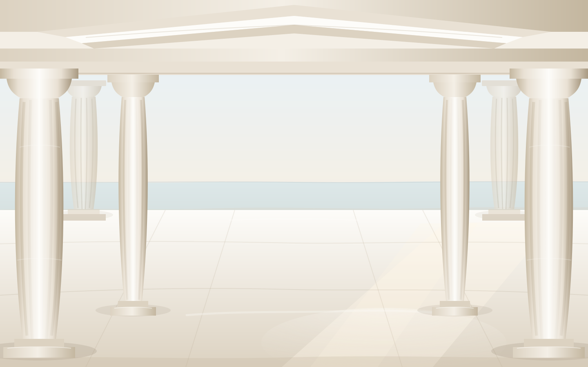

Λ Ο Γ Ο Σ
普羅米修斯把火帶給人類。火從來不只是工具——
它讓人開始建造、思考與創造。
Τ Ε Χ Ν Η
你定義問題。
AI 賦予它形體。
雕刻家不創造形體，他只是把多餘的石頭移開——
形體本來就在裡面。我們做的是同一件事：你說出問題，剩下的由 AI 與你一起完成。
Ε Ρ Γ Ο Ν
站上已經有 1500 套這樣長出來的系統。
AI SaaS Creation Platform
從思想，到創造。